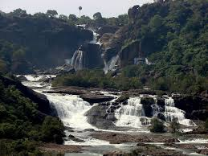
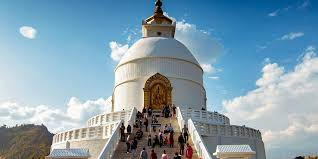
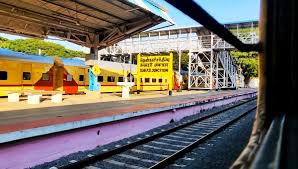
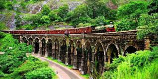
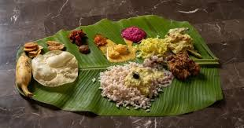
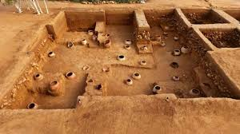

Tiunelveli: The City of Temples
Tirunelveli (also called Nellai) is a major city in Tamil Nadu, located on the banks of the Thamirabarani River. It is the sixth largest city in the state and is famous for its ancient temples, waterfalls, and rich cultural heritage.
Tourism


Tirunelveli is an old city with a history of more than a thousand years. It is known as an educational and cultural hub in southern Tamil Nadu, with many colleges and schools.
The city is divided into Tirunelveli and Palayamkottai, sitting on opposite sides of the Thamirabarani River. It has a hot but pleasant climate and is well‑connected by bus, train, and road to cities like Madurai, Kanyakumari, and Chennai.
Famous Places In Tirunelveli


Arulmigu Nellaiappar Temple – A very old Shiva temple with beautiful stone towers (gopurams) and carvings. Papanasam Falls – A waterfall on the Thamirabarani River, also known as the “Waterfalls of Tirunelveli”. Manimuthar Dam and Falls – A scenic dam and waterfall area popular for nature lovers. Kalugumalai – A rock‑cut temple and ancient Jain site with old sculptures. Agasthiyar Falls – A beautiful green waterfall in the Western Ghats near Tirunelveli.
Transport


Tirunelveli has a good transport system with buses, trains, auto‑rickshaws, and taxis. The city is well connected to nearby towns and big cities like Chennai, Madurai, and Kanyakumari.
Education
Tirunelveli is known as an important education hub in southern Tamil Nadu. The city has many schools, arts & science colleges, engineering colleges, and universities, so students from nearby districts also come here to study.
Food & Culture

Tirunelveli is famous for its special snacks like Tirunelveli halwa, idli, and filter coffee. The city has many small roadside eateries and traditional restaurants serving tasty Tamil food.
The city has many festivals in temples such as Nellaiappar Temple, especially the Aani festival in June–July. Classical music and temple culture are very important for people here.
Developing Areas

Tirunelveli is growing fast with new residential and commercial areas. Many people are building houses or buying plots in these developing localities.
Palayamkottai – Large residential area with many colleges and hospitals. Maharaja Nagar – Fast‑growing middle‑class housing zone. KTC Nagar – Modern, planned residential layout. Melapalayam – New projects and affordable plots. Periphery and Tenkasi side – New value plots and future growth areas.